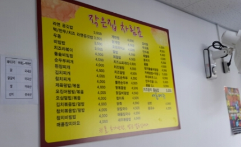
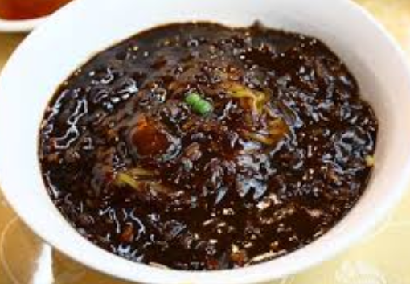
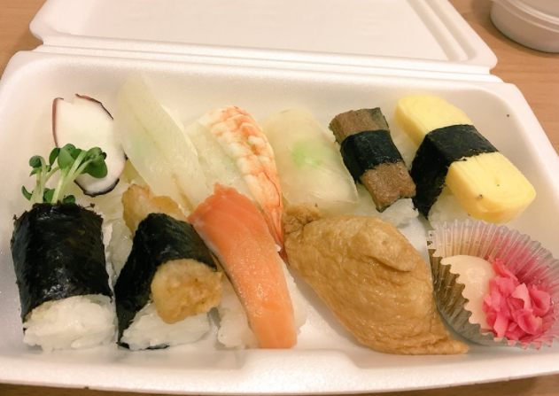
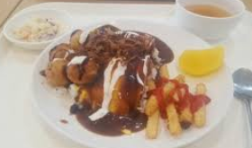
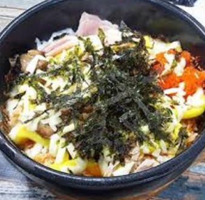
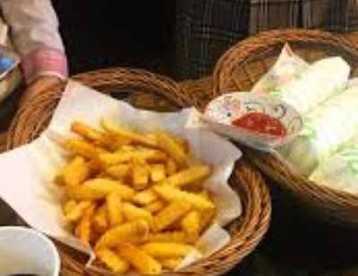
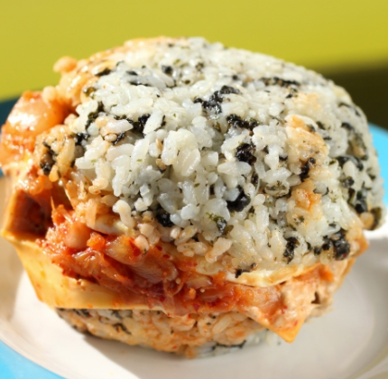

작은집

메뉴만 봐도 알수가 있다. 어마어마하게 많은 메뉴가 있다. 그리고 그맛은 우리가 생각한 바로 그맛이다. 예를 들어서 스파게티 생각하면 그냥 맛있는 스파게티도 아닌 그냥 진짜 스파게티가 있다. 장점은 빠르고 가깝다. 그래서 3학년때 7전공 때릴때 맨날 여기서 밥먹었다. 시간없으면 여기서 먹자
주소 : 서울시 노원구 광운대학교 후문
미식성

우리학교 짜장면집 중 하나 . 여기는 사천 탕수육이 맛있다. 짜장면하고 짬뽕은 사실 다 비슷한거 같다. 짜루랑 차이점이라면 뭐랄까 여기는 약간 옛날 중국집 요리 먹는 기분이다. 그냥 내가 어렸을때부터 짜장면 좋아해서 많이 먹었더니 이제 질려서 별로라서 2성 줬다.
주소 : 서울특별시 노원구 월계동 469-16
착한초밥

3900원에 10피스나 주는 혜자 초밥. 하지만 맛은 보장못한다. 그냥 뭐랄까 초밥인데 초밥은 아닌 초밥인거같기도 하고 아닌거 같기도하고.. 게다가 배도 안찬다 20피스는 먹어야 배가 찬다. 그래도 혜자혜자하니깐 2성
주소 : 서울 노원구 월계동
학식

우리학교 학식은 아싸들의 성지다. 맨날 가면 반대편보고 사람들 밥먹고 있는데 내 꿈중하나가 그런사람들 앞에 앉아서 인사하면서 밥먹는건데 아직 못했다. 여튼 학식은 가성비는 좋은데 맛은 별로고 라면은 괜찮다. 학식가면 라면먹자
주소 : 서울특별시 노원구 광운대학교 복지관
아그집

갈비덮밥? 비빔밥? 치즈밥? 여튼 그런 밥인데 엄청 맛있진 않고 그냥 배채우기에는 딱인 그런곳이다.
주소 : 서울특별시 노원구 월계1동 429-65
엄마의 밥상

난 한번도 안가봤는데 사람들이 그냥 그렇다해서 2성이 되었다.
주소 : 서울시 노원구 석계로 13길 25
후문식당

작은집 자리 없으면 가는 곳이다. 근데 여름에 여기에서만 메밀판다. 메밀 먹고 싶으면 윤스쿡 아니면 여기로 가자.
주소 : 서울특별시 노원구 석계로 13길 25
밥버거

밥버거는 시간없고 혼자 먹을때 좋은 밥이다. 봉구스랑 쉐프랑 2개있는데 둘다 맛이 같은거 같아서 그냥 묶어서 처리했다. 참고로 칼로리가 엄청나니 나처럼 2개씩 먹고 돼지가 되지 말자.
주소 : 서울특별시 노원구 월계동 469-21